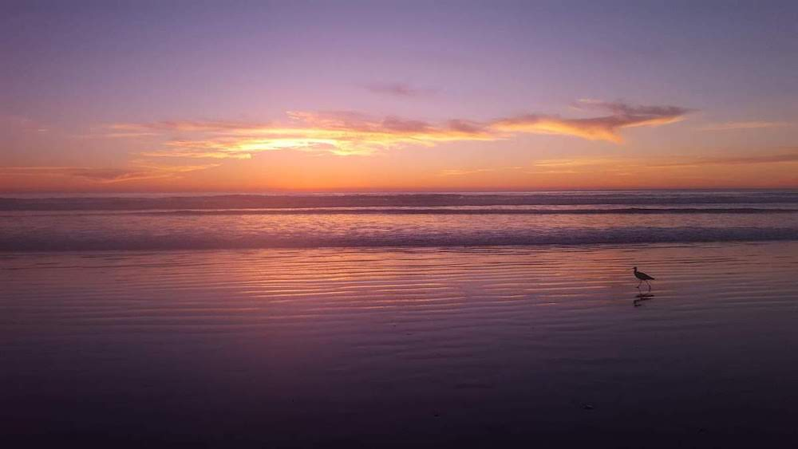
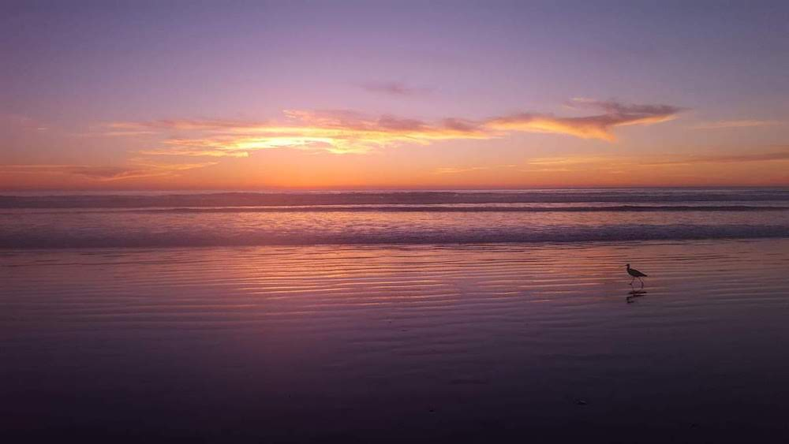
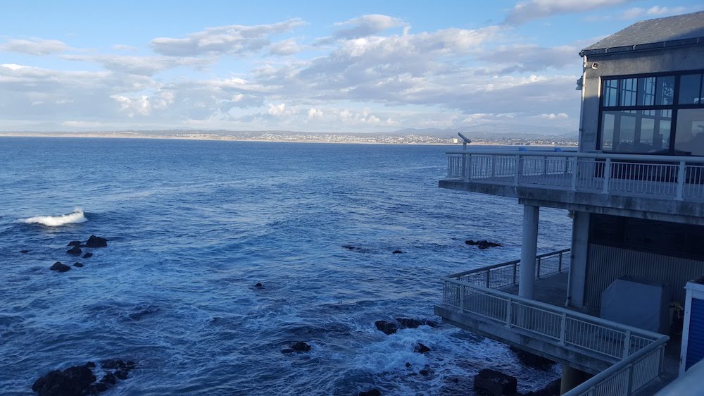
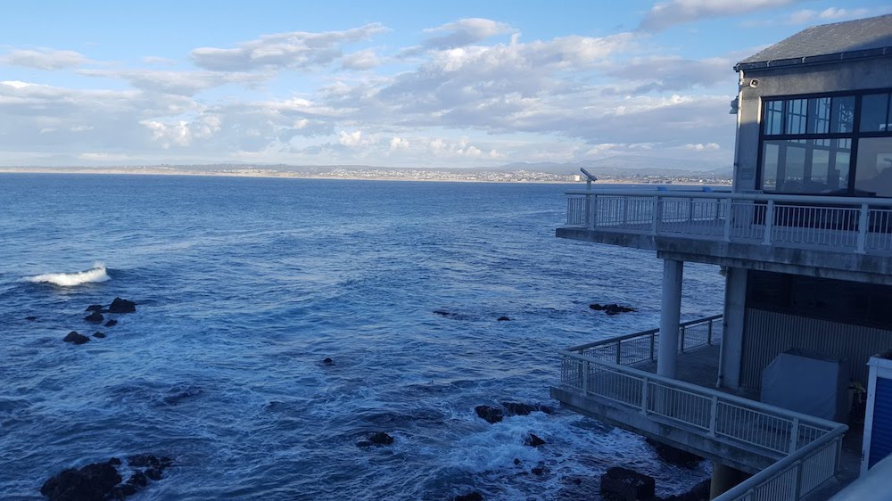
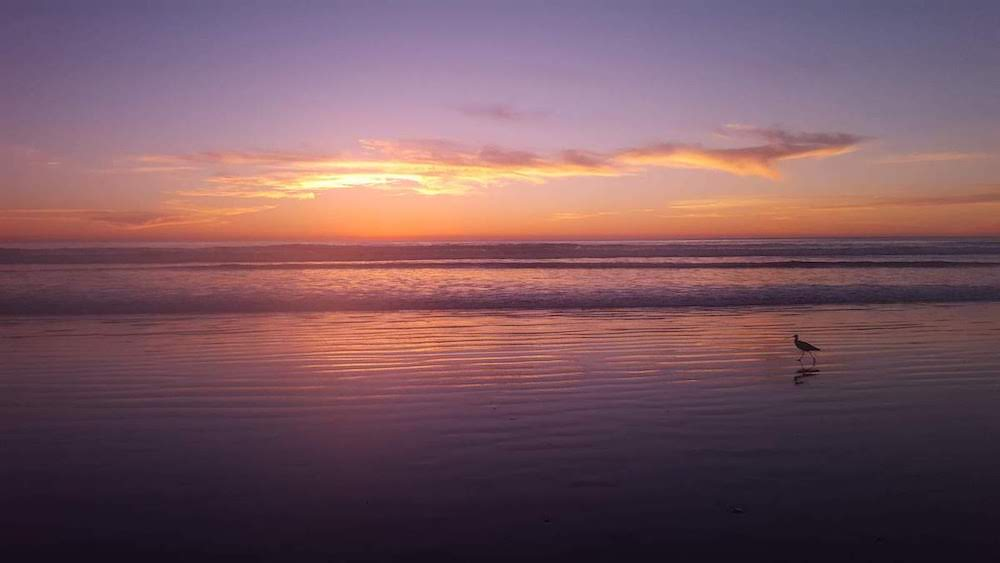
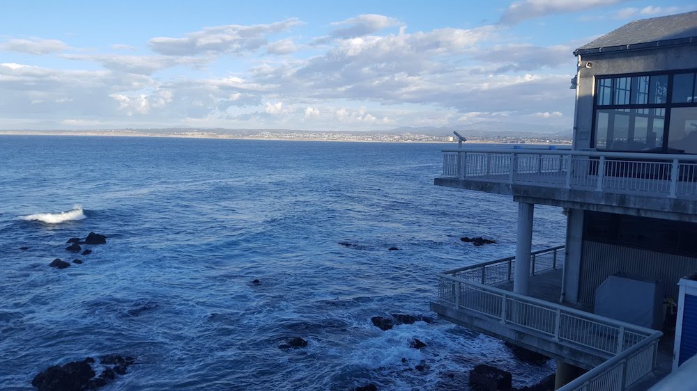

 

Hi, I'm Krithika, photography fanatic! Here's an archive of my landscape photography. Click on the left and right images to flip through the carousel, or click on the center image to learn more about it!


This photo was taken at Lake Elizabeth in Fremont, California. I used to come here all the time as a kid and always loved the sunsets. Here you can see the orange glow of the sun through the trees.